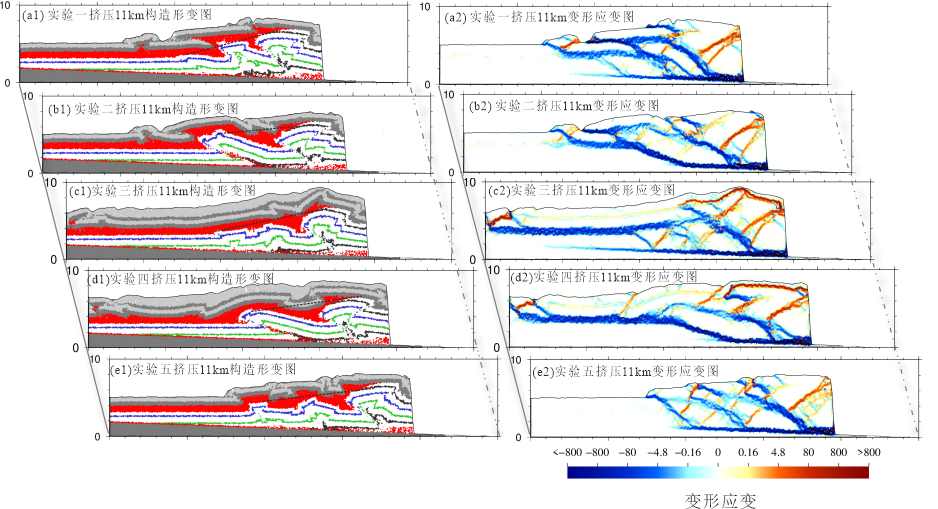

本文主要揭示先存断裂会影响褶皱冲断带构造传播的方式，导致盐下楔体形态、断裂数量和盐上构造样式的差异。同构造沉积会增强盐上和盐下的分层差异变形，滑脱层强度增强会减弱盐上和盐下的分层变形。通过将模拟结果与库车坳陷东、西段构造特征进行对比分析，我们认为先存断层可能是影响库车坳陷东、西段盐下构造差异演化的重要因素(徐雯峤 等.,2020)。
徐雯峤,汪伟*,尹宏伟,贾东,李长圣,杨庚兄,李刚.库车坳陷东西段盐下构造变形差异演化数值模拟分析.地质学报, 2020, 94(06): 1740-1751.题目
库车坳陷东西段盐下构造变形差异演化数值模拟分析
作者
徐雯峤1, 汪伟1*, 尹宏伟1, 贾东1, 李长圣2, 杨庚兄1, 李刚3
- 南京大学地球科学与工程学院, 南京, 211046
- 东华理工大学地球科学学院, 南昌, 330013
- 塔里木油田公司资源勘察处, 新疆库尔勒, 841000
摘要
库车坳陷东、西段盐下构造在北部构造带以南出现明显的差异构造变形特征，在西段的克拉苏构造带盐下发育由一系列逆冲断裂组成的叠瓦构造，而在东段的东秋构造带盐下发育一个大型的断背斜构造。本文基于地震资料构造解析，采用离散元数值模拟方法，设计了５组数值模拟实验来探究先存断层、同构造沉积和滑脱层强度对褶皱冲断带构造形态及演化的影响，进而分析库车坳陷东、西段构造特征差异的成因机制。模拟结果表明含盐褶皱冲断带往往发育垂向分层构造变形。先存断裂会影响褶皱冲断带构造传播的方式，导致盐下楔体形态、断裂数量和盐上构造样式的差异。同构造沉积会增强盐上和盐下的分层差异变形，滑脱层强度增强会减弱盐上和盐下的分层变形。通过将模拟结果与库车坳陷东、西段构造特征进行对比分析，我们认为先存断层可能是影响库车坳陷东、西段盐下构造差异演化的重要因素。库车坳陷东段的东秋构造带受先存断裂影响，在先存断裂的位置优先变形，形成东秋断裂和上覆东秋背斜，同时先存断裂既有助于应力释放，又阻拦应力向前传递，形成乱序式变形传播。库车坳陷西段的克拉苏构造带，没有先存断裂的影响，盐下主要发育前展式构造变形，形成由一系列逆冲断层组成的叠瓦构造楔体。

五组实验挤压11km时构造形变图和变形应变图
致谢
数值模拟采用离散元数值模拟软件VBOX（www.geovbox.com），感谢Rice大学Julia Morgan教授在离散元模拟及应力应变分析中提供的帮助。感谢编辑及审稿专家对本文认真而专业的审阅，并提出具有启发和指导意义的意见与建议，极大地提高了本文的质量，谨致衷心感谢。